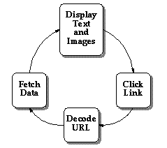
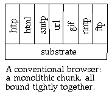
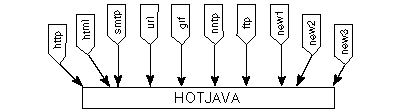
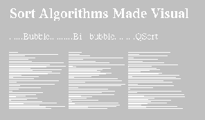
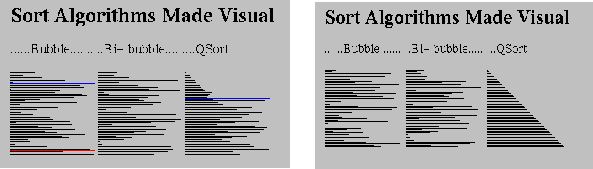
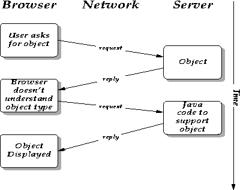
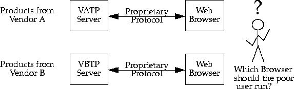
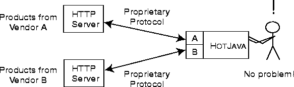

| CONTENTS | PREV | NEXT | The Java Language Environment |
The Internet has evolved into an amorphous ocean of data stored in many formats on a multiplicity of network hosts. Over time, various data storage and transmission protocols have evolved to impose some order on this chaos. One of the fastest growing areas of the net--the one we're primarily interested in here--is the World-Wide Web (WWW), which uses a hypertext-based markup system to enable users to navigate their way across the oceans of data.The concept of hypertext is by no means new, but its realization has spanned decades. The idea behind hypertext was described in an essay by Vannevar Bush in 1945, and evangelized by Theodore (Ted) Nelson in the 1960s and 1970s. Although Apple Computer's HyperCard product for Macintosh provided an early if somewhat primitive implementation, the real power of hypertext comes from the ability to create inter-document links across multiple host computers on the network. The first practical if small implementation of a network-based hypertext system was created by Tim Berners-Lee at CERN, using the NEXTSTEP development environment to create what would blossom into HTML (HyperText Markup Language), HTTP (HyperText Transport Protocol), and the WWW (World-Wide Web, or W3).
Web browsers combine the functions of fetching data with figuring out what the data is and displaying it if possible. One of the most prevalent file formats that browsers deal with is HyperText Markup Language, or HTML-- a markup language that embeds simple text-formatting commands within text to be formatted. The main key to the hypertext concept is HTML's use of links to other HTML pages either on the same host or elsewhere on the Internet.
A user in search of gold mining data, for instance, can follow links across the net from Mountain View, California, to the University of the Witwatersrand, South Africa, and arrive back at commercial data providers in Montreal, Canada, all within the context of tracing links in hypertext "pages". For a topic of timely relevance to the World-Wide Web, a user interested in aspects of multimedia law relative to the World-Wide Web can tune in to the home page at www.oikoumene.com/oikoumene for links to intellectual property issues.
What we could call the "first-generation" Web browsers--exemplified by NCSA Mosaic and early versions of Netscape Navigator--provide only an illusion of being interactive. By using the (somewhat limited) language of HTML these browsers provide hypertext links on which you can click. The browser goes off across the network to fetch the data associated with that link, downloads the data, and displays it on your local screen.
This illustration depicts roughly the "interactive" flow of control in the first-generation Web browsers. You can see that it's not really highly interactive--it's just a fancy data fetching and display utility with fixed hypertext links. It does not dynamically handle new data types, protocols, or behaviors.
HotJava brings a new twist to the concept of client-server computing. The general view of client-server computing is a big centralized server that clients connect to for a long time and from which they access data and applications. The client-server model is roughly a star with a big server in the middle and clients arrayed around it. The new model exemplified by the World-Wide Web is a wide-spread collection of independent nodes with short-lived connections between clients and many servers. The controlling intelligence shifts from the server to the client and the answer to "who's in charge?" shifts from the server to the client.

The primary problem with the first-generation web browsers is that they're built in a monolithic fashion with their awareness of every possible type of data, protocol, and behavior hard-wired in order for them to navigate the Web. This means that every time a new data type, protocol, or behavior is invented, these browsers must be upgraded to be cognizant of the new situation. From the viewpoint of end users, this is an untenable position to be in. Users must continually be aware of what protocols exist, which browsers deal with those protocols, and which versions of which browsers are compatible with each other. Given the growth of the Internet, this situation is clearly out of control.
HotJava solves the monolithic approach and moves the focus of interactivity away from the Web server and onto the Web client--that is, to the computer on which the user is browsing the Web. Because of its basis in the Java system, a HotJava client can dynamically download segments of code that are executed right there on the client machine. Such Java-based "applets" (mini-applications) can provide full animation, play sound, and generally interact with the user in real time.HotJava removes the static limitations of the Mosaic generation of Web browsers with its ability to add arbitrary behavior to the browser. Using HotJava, you can add applications that range from interactive science experiments in educational material, to games and specialized shopping applications. You can implement interactive advertising, customized newspapers, and a host of application areas that haven't even been thought of yet. The capabilities of a Web browser whose behavior can be dynamically updated are open-ended.
Furthermore, HotJava provides the means for users to access these applications in a new way. Software migrates transparently across the network as it's needed. You don't have to "install" software--it comes across the network as you need it--perhaps after asking you to pay for it. Content developers for the World-Wide Web don't have to worry about whether or not some special piece of software is installed in a user's system--it just gets there automatically. This transparent acquiring of applications frees content developers from the boundaries of the fixed media types such as images and text and lets them do whatever they'd like.
The central difference between HotJava and other browsers is that while these other browsers have knowledge of the Internet protocols hard-wired into them, HotJava understands essentially none of them. What it does understand is how to find out about things it doesn't understand. The result of this lack of understanding is great flexibility and the ability to add new capabilities very easily.
One of the most visible uses of HotJava's ability to dynamically add to its capabilities is something we call dynamic content. For example, someone could write a Java program to implement an interactive chemistry simulation, following the rules of the HotJava API. People browsing the net with HotJava could easily get this simulation and interact with it, rather than just having a static picture with some text. They can do this and be assured that the code that brings their chemistry experiment to life doesn't also contain malicious code that damages the system. Code that attempts to be malicious or which has bugs essentially can't breach the walls placed around it by the security and robustness features of Java.
For example, the following is a snapshot of HotJava in use. Each diagram in the document represents a different sort algorithm. Each algorithm sorts an array of integers. Each horizontal line represents an integer: the length of the line corresponds to the value of the integer and the position of the line in the diagram corresponds to the position of the integer in the array.

In a book or HTML document, the author has to be content with these static illustrations. With HotJava the author can enable the reader to click on the illustrations and see the algorithms animate:

Using these dynamic facilities, content providers can define new types of data and behavior that meet the needs of their specific audiences, rather than being bound by a fixed set of objects.
HotJava's dynamic behavior is also used for understanding different types of objects. For example, most Web browsers can understand a small set of image formats (typically GIF, X11 pixmap, and X11 bitmap). If they see some other type, they have no way to deal with it. HotJava, on the other hand, can dynamically link the code from the host that has the image allowing it to display the new format. So, if someone invents a new compression algorithm, the inventor just has to make sure that a copy of its Java code is installed on the server that contains the images they want to publish; they don't have to upgrade all the browsers in the world. HotJava essentially upgrades itself on the fly when it sees this new type.The following is an illustration of how HotJava negotiates with a server when it encounters an object of an unknown type:

The protocols that Internet hosts use to communicate among themselves are key components of the net. For the World-Wide Web (WWW), HTTP (HyperText Transfer Protocol) is the most important of these communication protocols. Within WWW documents, a reference to another document (even to a document on another Internet host computer) is called a URL, meaning a Uniform Resource Locator. The URL contains the name of the protocol, HTTP, that is used to find that document. Most of the current generation of Web browsers have the knowledge of HTTP built-in. Rather than having built-in protocol handlers, HotJava uses the protocol name to link in the appropriate handler as required, allowing new protocols to be incorporated dynamically.Dynamic incorporation of protocols has special significance to how business is done on the Internet. Many vendors are providing new Web browsers and servers with added capabilities, such as billing and security. These capabilities most often take the form of new protocols. So each vendor comes up with their unique style of security (for example) and sells a server and browser that speak this new protocol.
Without dynamic protocols, a user would need multiple browsers to access data on multiple servers if each of those servers had proprietary new protocolss. Such a situation is incredibly clumsy and defeats the synergistic cooperation that makes the World-Wide Web work.

With HotJava as a base, vendors can produce and sell exactly the piece that is their added value, and integrate smoothly with other vendors, creating a final result that is seamless and very convenient for the end user.

Protocol handlers get installed in a sequence similar to how content handlers get installed: The HotJava Browser is given a reference to an object (a URL). If the handler for that protocol is already loaded, it will be used. If not, the HotJava Browser will search first the local system and then the system that is the target of the URL.